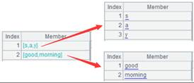

Description:
Compute a report file.
Syntax:
report_run(rpt, paramValue:paramName,....)
Note:
This external library function (See The Programmer’s Guide to RaqReport External Library Guide) performs computation over a report file.
Parameter:
|
rpt |
A report object |
|
paramValue |
Report parameter value; can be absent |
|
paramName |
Parameter name; by default, write values in the order of parameters in the report |
|
ds |
A table sequence object; can be absent |
|
dsName |
Dataset name; by default, correspond table sequence objects and the original data sets in the report file one by one; the colon dsName before should not be omitted |
Return value:
Boolean
Example:
|
|
A |
|
|
1 |
>report_config("config\\raqsoftConfigReport.xml") |
|
|
2 |
=report_open("D:\\test.rpx") |
|
|
3 |
=report_run(A2) |
Compute the report file test.rpx that doesn’t have any parameters |
|
4 |
=report_open("D:\\test1.rpx") |
 The report file test1.rpx has 3 parameters |
|
5 |
=report_run(A4,"abc":"arg1",12:"arg2","2016-01-02":"arg3") |
Compute a report file having several parameters |
|
6 |
=report_run(A4,"abc":,12:,"2016-01-02":) |
As the report parameter names are omitted, the parameter values are set in its original order, with the colon retained |
|
7 |
=report_open("D:\\stu.rpx") |
Report stu.rpx uses SCORES table in demo database; data set name is ds1 |
|
8 |
=connect("demo") |
|
|
9 |
=A8.query("select * from SCORES where SCORE<60") |
Return a table sequence |
|
10 |
=report_run(A7;A9:"ds1") |
Take data of table sequence A9 as the report data set ds1’s result set |
|
11 |
=report_run(A7;A9:) |
When parameter dsName is absent, write values in the order of data sets in the report |
Related function: